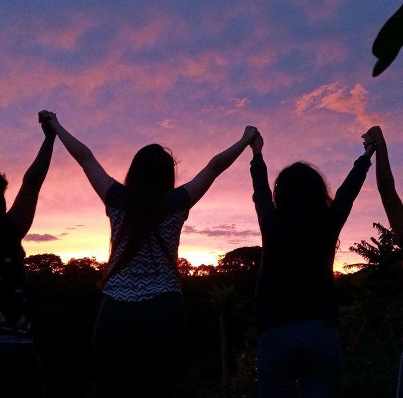

.png)
El origen de la Universidad Adventista de Centro América se remonta al año 1925, cuando la Iglesia Adventista del Séptimo Día estableció un Centro Educativo en la comunidad de las Cascadas, corregimiento de Pedregal, en la ciudad capital de Panamá.
Digno de recordar al Pastor William Baxter quien propuso la fundación de una casa de estudios secundarios que gradualmente crecería y llegara a convertirse en columna y vida para la educación y la formación de la entusiasta juventud centroamericana. Con fe sencilla pero aferrada al brazo de la Omnipotencia, se da inicio a ese sueño con una significativa ceremonia en la que se mezclaron el canto y la plegaria, la emoción y el gozo, la audacia y la confianza, el ideal y el triunfo. Así nace la institución con el nombre descriptivo de: “Escuela Para Jóvenes de Habla Española”.
A principios de noviembre de 1927 a pesar de las adversidades se dio apertura al primer año escolar con una matrícula de 16 alumnos, quienes con alegría, vigor, trabajo y con el lema motivador de “Vivir cada día para el Señor Jesús”, emprendieron la labor educativa adventista en Centroamérica.
El progreso de la institución era notorio y por consiguiente todo indicaba que se avanzaba hacia la creación de la primera universidad de la Unión Centroamericana de los Adventista del Séptimo Día. En 1985 se realizó un concurso para escoger el nombre de la futura universidad y ganó el de UNADECA (Universidad Adventista de Centro América), propuesto por el joven estudiante de nacionalidad guatemalteca y estudiante de la escuela de teología, Cándido Natareno.
El anuario estudiantil de 1970 describe cómo dejó de existir un nombre muy querido por todos, que evocaba recuerdos gratos, momentos felices y al mismo tiempo la lucha y sacrificio, el nombre Colegio Vocacional Adventista de América Central.
Bajo la dirección de C. F. Montgomery; en 1945 se tomó la decisión de cambiarle el nombre a la institución de “Academia Hispanoamericana Adventista” a COVAC (Colegio Vocacional Adventista de América Central). En 1948 se organizó la Asociación Estudiantil; en consecuencia da inicio la publicación de Eco Estudiantil, el cual ha sido desde entonces casi la única fuente de información para conocer la historia de este centro de estudios.
El acta N. 024-86 del CONESUP firmada por el Licenciado Arnoldo Montero Martínez, secretario general de ese organismo enviada a las autoridades de la institución el 16 de Julio de 1986 expresa: Aprobar la creación de la Universidad Adventista de Centro América, por comprobar que se han satisfecho los requisitos que establece el artículo VI de la ley 6693 y su Reglamento.
